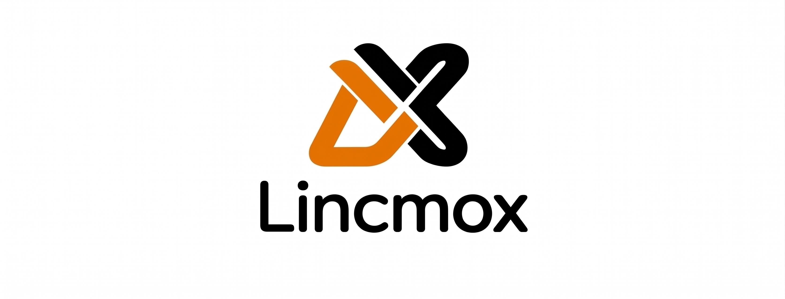

Welcome to the Lincmox documentation
Find here all the functional and technical documentation of the project.
Access the documentation
Lincmox is an open-source project that brings full control of the status LEDs and front LED strip of the LincPlus LincStation N1 when the machine runs Proxmox VE.